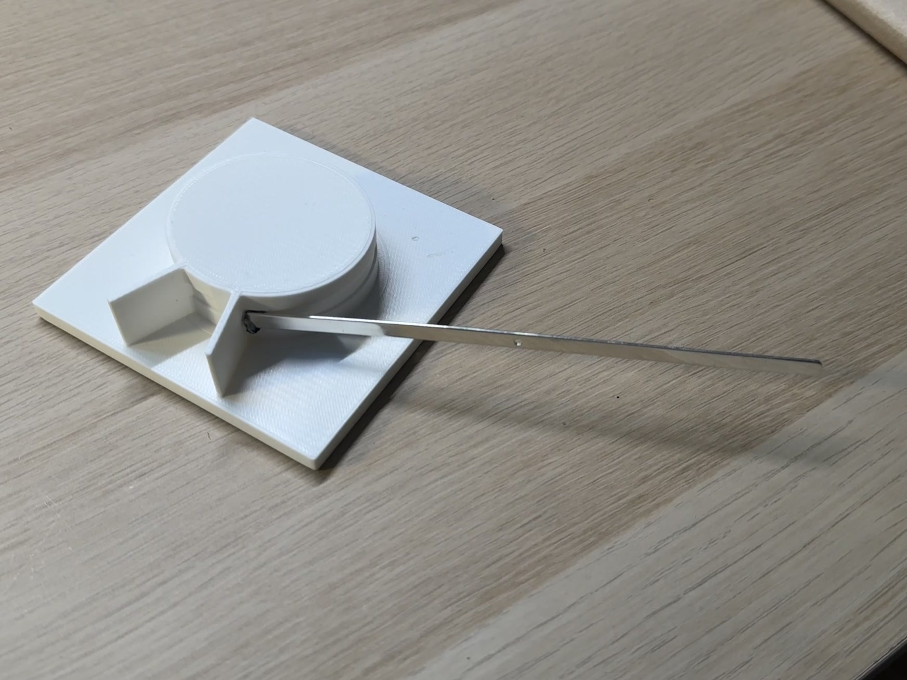

Why it exists
A close friend was moving to the United States for a year, so I made a wearable sundial as a leaving present that they could carry with them.
Calculating its error turned the gift into an engineering project. A sundial shows apparent solar time, which differs from clock time for three reasons.
| Effect | Cause | Size |
|---|---|---|
| Longitude | Central European Time uses a reference meridian east of Munich; the correction is four minutes per degree | ≈ 14 min, constant |
| Equation of time | The eccentricity of the Earth's orbit and the tilt of its axis | −14 to +16 min |
| Daylight saving | Legal adjustment to clock time | 60 min, or 0 |
Because the dial would be used in another location, I built a website that calculates its correction for the listed cities and any date.
The correction, running
This is the same calculation the tool does. Pick a date and a place, and it returns the difference between what the dial reads and what a clock reads.
Add this to the dial reading to get clock time. Latitude sets the angle of the gnomon; the time correction uses longitude and date. Custom mode estimates the time zone from longitude and uses European daylight-saving dates.
How it works
The tool takes a date and a location and returns the offset in minutes between what the dial reads and what a clock reads. The longitude correction is the difference between the local meridian and the time-zone meridian, at four minutes per degree. The equation of time is computed for the date. Daylight saving follows the local rule for each listed city and European dates in custom mode. Latitude determines the angle the gnomon has to make with the horizontal, so the physical dial must be adjusted when it moves to a new latitude.
The object went through several versions before the one I gave away. Gold plating took longer than planned, so I finished the day before the flight. Next time I would schedule finishing as its own process because it has separate failure modes.

I printed this jig to bend the metal strip to a repeatable radius before marking and finishing the wearable band.
What I documented
I kept a booklet with every sketch, calculation, failed version and a Polaroid of each stage. It lets the recipient see how the object was made, and it lets me reconstruct why I made each decision.
Where it stands
The sundial was given away in December 2025. The web tool is online and supports the listed cities and an approximate custom-longitude mode.